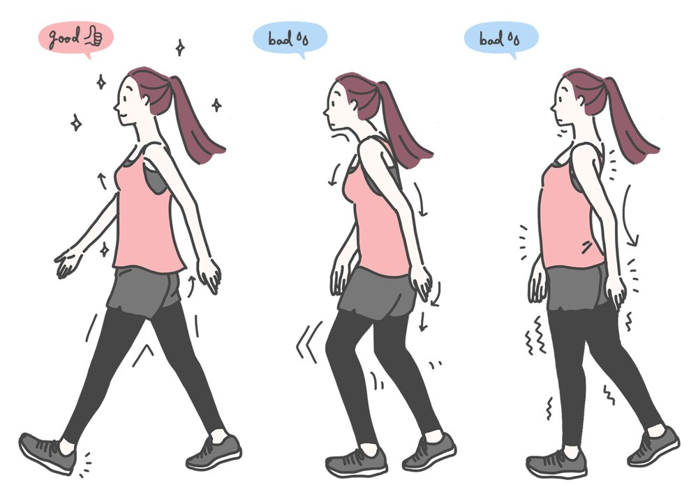

季節のカラダ
お正月明けのカラダ。運動不足をゆっくり戻すコツ

新年あけましておめでとうございます。当院は、本日1月5日から通常どおり診療しています。
お正月は、こたつやソファで過ごす時間が長くなり、食べる量が増え、カラダを動かす量が減りがちです。お休み明けに「カラダが重い」「腰や膝がかたい」と感じている方も多いのではないでしょうか。
お正月明けにカラダがつらくなる理由
- 動かない時間が長かった
座りっぱなし、寝転がりっぱなしの時間が長いと、筋肉がかたくなり、関節も動かしにくくなります。 - 姿勢のくせが強くなっている
こたつで背中を丸める、片ひじをついて横になる。かたよった姿勢が続くと、カラダの歪み（ユガミ）のもとになります。 - 生活のリズムが変わった
寝る時間や起きる時間がずれ、食べすぎも重なると、疲れが抜けにくくなります。
いきなりがんばらないことが大切です
「お正月で体重が増えたから」と、急に長い距離を歩いたり、激しい運動を始めたりすると、かたくなったカラダには大きな負担になります。特に冬は、寒さで筋肉がかたくなっています。
1〜2週間かけて、少しずつ普段の動きに戻していきましょう。
少しずつ戻すコツ
- 朝、布団の中でカラダを動かす
あお向けで膝を立てて左右にゆっくり倒したり、足首を回したりしましょう。起きる前の1〜2分で、カラダが動き出しやすくなります。 - 座りっぱなしにしない
30分〜1時間に一度は立ち上がり、腰を伸ばしましょう。座っているときは、骨盤を起こす時間と、背もたれにもたれて休む時間をくり返します。 - 家の中でも歩く
雪で外に出にくい日は、家の中で足踏みをするだけでもかまいません。外を歩くときは、歩幅を小さく、足の裏全体を地面につけるように歩きます。 - 腹筋を使って胸を開く
下腹を軽く引きこみ、その力をみぞおちのあたりまで上げるイメージで保つと、胸が自然に開きます。疲れたら一度力を抜き、またくり返します。 - 寝る前にあお向けで5〜10分
寝る前にあお向けになり、5〜10分ほどカラダをまっすぐにして休みます。一日のカラダのかたよりをリセットする時間です。
最初から完璧を目指す必要はありません。まずはひとつ、やってみてください。
今年は「自分でカラダを管理する」一年に
痛みには、理由があります。その多くは、普段のカラダの使い方です。当院が目指しているのは、患者さんがご自分でカラダを管理できるようになることです。
姿勢分析「ぴかっto！」で今の姿勢のくせを確かめ、骨ぴか整体（骨格矯正）でバランスを整えながら、あなたに合ったカラダの使い方をお伝えします。今年も、どうぞよろしくお願いいたします。
こんなときは早めにご相談ください
- お休み中に痛めた腰や首が、まだ痛む
- 膝や腰の痛みで、歩くのがつらい
- 手足にシビレがある
シビレが強い、力が入らないときは、先に医療機関を受診してください。
← ブログの一覧へ